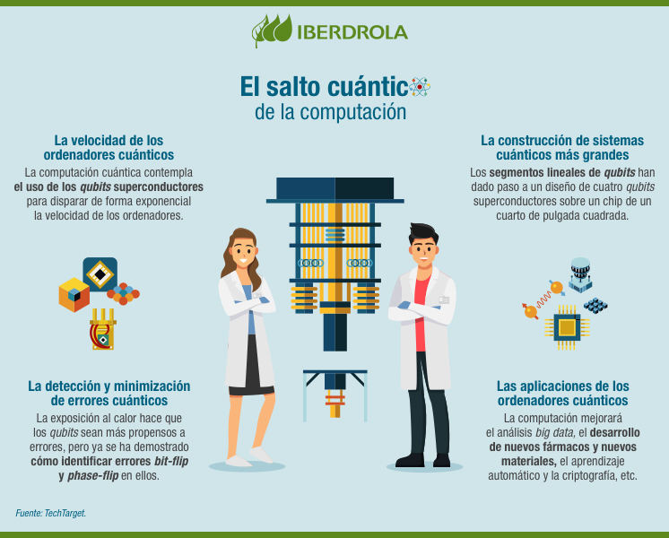

Es una tecnología que es estudiada desde la década de los 80 y tiene la finalidad de resolver problemas que para una computadora clásica son inalcanzables.
una computadora clásica trabaja con modelos de información representados por bits. Esos bits tienen el valor de 0 (cero) y 1. El cómputo cuántico, a diferencia del tradicional, procesa la información mediante qubits, que pueden representar tanto a 1 como a 0, pero también la combinación entre esos valores (0 y 0; 1 y 1; 0 y 1).
Lo que con lleva a una superposición, indicandonos que tiene un alcance mayor de procesamiento de informacion, mas no que sea más rápida.